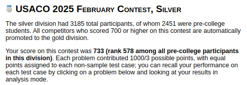

Last year I promoted to Silver in my first USACO contest as a high school freshman; this February, I promoted to Gold.
I scored 733/1000 in the Feb. 2025 USACO contest, placing 578 out of the 2451 pre-college competitors
world-wide competing in the silver division. I solved problems 1 and 2 completely and wrote a partial solution
for problem 3, pulling together enough points to advance.
This contest was quite a ride.
In preparation for competing in the Silver division, I started learning C++.
Previously, I had only used Python in CP, but as speed became more critical in higher divisions, Python needed to be replaced.
By the February contest I knew enough C++ to write full solutions, but I still stuck with Python to start the contest
(since it's much quicker to write, more readable, and I was more used to writing code in it).
In-contest... I solved problem 1 with a correct Python solution, and moved on to begin working on problem 2.
After brainstorming, pseudo-coding, and testing a solution, I implemented it in Python and submitted it to the grader.
Just a couple test cases were missed, due to time-limit-exceeded.
I was confused for a bit as I tried to figure out how I could optimize my solution; I had written one
that should have had a good enough time complexity to pass the test cases.
After struggling for a little more, I gave up and moved on to tackle problem 3, hoping to come back to it later.
Coming back after implementing my partial solution for problem 3, it finally clicked to me that perhaps
I had the right solution, but it was just Python which was too slow.
It was unlikely (this had only happened a few times in my practice before the official contests and the problems were
written to try to guarantee proper support for all languages), but I knew I might as well give the idea a shot.
Quickly, I translated my Python solution line-by-line into C++.
I submitted the program.
The same testcases solved by my Python solution turned green.
Then finally, I saw the rest of the test-cases pass successfully too.
These last couple test-cases gave me enough points to make the cutoff and advance.
USACO has been an extremely valuable part of my CS education, and I'm looking forward
to continuing my studies in more advanced topics while shooting for USACO Platinum!
Also, as a side-quest I reached 3000 in puzzle rating on chess.com :D
